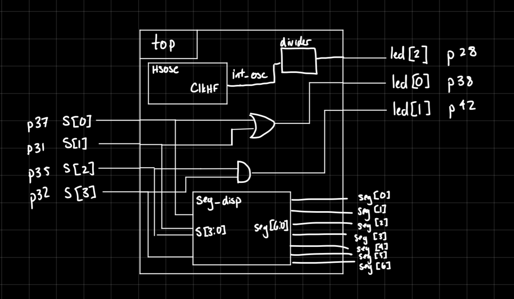
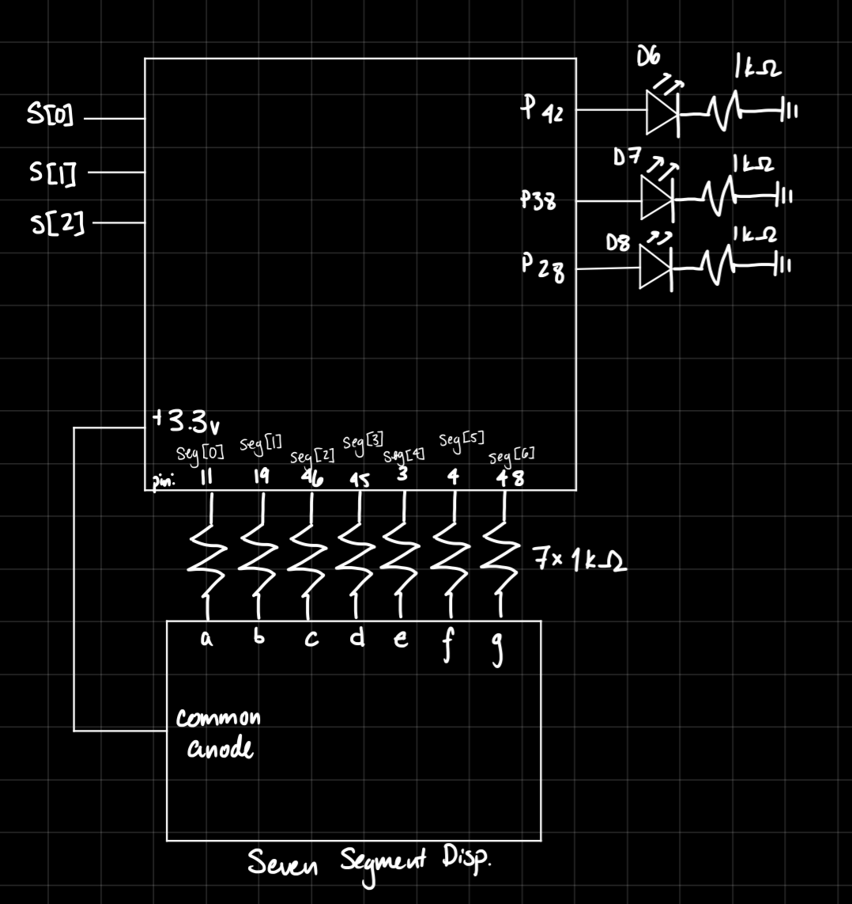
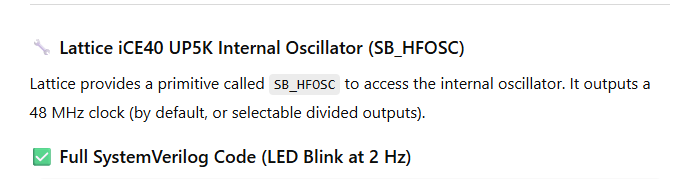
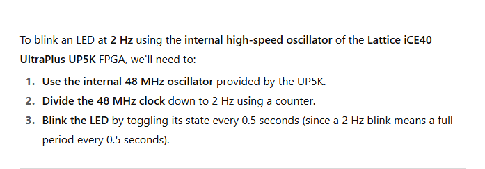
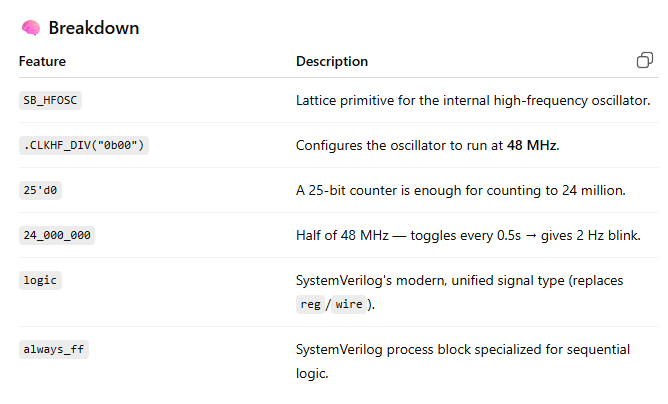
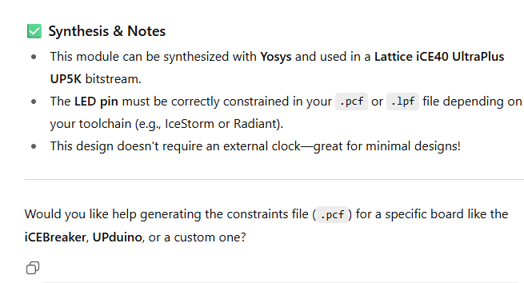

Introduction
Lab #1 involved the configuration and testing of the E155 development board. First, all the necessary parts were soldered per the project board schematic. Then, to confirm functionality of the FPGA, the board was programmed so that the onboard LED would blink at a rate of 2.4Hz, using the onboard high speed oscillator (HSOSC). Then, the board was used to control a 7 segment display, with the input coming from a set of switches on the board, and the display showing the corresponding hex digit.
Design and Testing Methodology
The soldering included both SMD and TMD parts to a given PCB.
The LED was driven by using the HSOSC at 24MHz and a counter to divide the signal so that the LED could blink at the desired 2.4Hz. Two other LEDs were meant to be driven, but as of right now, they are absent from the board due to materials constraints.
The 7-segment display was driven using a module involving a simple case statement, that evaluated the input from the onboard switches, then reflected that value in hex. The display was connected to pins off the FGPA, and each segment was turned on
Technical Documentation
The code for the project can be found in this Github repository
The main module is as shown below:
’// Wava Chan // wchan@g.hmc.edu // Aug. 29, 2025 // Main module for testing operation of project board
module lab1_wc( input logic [3:0] s, output logic [2:0] led, output logic [6:0] seg);
logic int_osc; // Internal clock
logic [32:0] counter;
// Segment display module
seg_disp sd(s, seg);
// START CODE FROM TUTORIAL
// Internal high-speed oscillator
HSOSC #(.CLKHF_DIV(2'b01))
hf_osc (.CLKHFPU(1'b1), .CLKHFEN(1'b1), .CLKHF(int_osc));
// Counter
always_ff @(posedge int_osc) begin
counter <= counter + 33'd859;
end
// Assign LED output
assign led[0] = s[1] ^ s[0];
assign led[1] = s[3] & s[2];
assign led[2] = counter[32];
// END CODE FROM TUTORIAL endmodule ’
This includes a module called seg_disp, which consists of:
’// Wava Chan // wchan@g.hmc.edu // Aug. 29, 2025 // seg_disp determines which segments must be turned on for each hexidec digit
module seg_disp(input logic [3:0] s, output logic [6:0] seg ); logic [6:0] seg_intm; always_comb begin // seg[0] is A // seg[6] is G case(s) 4’b0000: seg_intm <= 7’b0111111; //0 4’b0001: seg_intm <= 7’b0000110; //1 4’b0010: seg_intm <= 7’b1011011; //2 4’b0011: seg_intm <= 7’b1001111; //3 4’b0100: seg_intm <= 7’b1100110; //4 4’b0101: seg_intm <= 7’b1101101; //5 4’b0110: seg_intm <= 7’b1111101; //6 4’b0111: seg_intm <= 7’b0000111; //7 4’b1000: seg_intm <= 7’b1111111; //8 4’b1001: seg_intm <= 7’b1101111; //9 4’b1010: seg_intm <= 7’b1110111; //A 4’b1011: seg_intm <= 7’b1111100; //B 4’b1100: seg_intm <= 7’b1011000; //C 4’b1101: seg_intm <= 7’b1011110; //D 4’b1110: seg_intm <= 7’b1111001; //E 4’b1111: seg_intm <= 7’b1110001; //F default: seg_intm <= 7’b1111111; endcase seg <= ~seg_intm; // Flip all bits to pull segments DOWN to turn them on end endmodule’
Block Diagram

Schematic

Results and Discussion
The design met all intended objectives. The LED blinks at the desired rate, and the 7 segment display correctly produces digits 0-F based on input from the switches.
However, it proved difficult to run the QuestaSim testbench simulation. This aspect would need more work, but the design is verified by physical testing.
Conclusion
The design was able to successfully operate a 7-segment display as well as drive the on-board LED using the HSOSC. I spent 15 hours working on this lab.
AI Prototype Summary
I fed ChatGPT the given prompt, and it produced the below code
module led_blink_2hz ( output logic led );
// Internal oscillator signal
logic clk_48mhz;
logic hfosc_en = 1'b1;
logic hfosc_ready;
// Instantiate the internal high-frequency oscillator
SB_HFOSC #(
.CLKHF_DIV("0b00") // "00" = 48 MHz, "01" = 24 MHz, etc.
) hfosc_inst (
.CLKHFEN(hfosc_en), // Enable the oscillator
.CLKHFPU(hfosc_en), // Power up the oscillator
.CLKHF(clk_48mhz) // Output clock signal
);
// Counter for clock division
logic [24:0] counter = 25'd0; // Enough bits to count to 24,000,000
logic led_state = 0;
always_ff @(posedge clk_48mhz) begin
if (counter == 24_000_000 - 1) begin
counter <= 0;
led_state <= ~led_state; // Toggle LED every 0.5s → 2 Hz
end else begin
counter <= counter + 1;
end
end
assign led = led_state;endmodule `
As well as some helpful notes about the prompt and the output:
   
However, the code did not sythesize, and produced the error:
Error 35901063 Synthesis ERROR <35901063> - c:/users/wchan/documents/github/e155lab1/ai_prompt/source/impl_1/ai_prompt.sv(17): instantiating unknown module SB_HFOSC. VERI-1063 [ai_prompt.sv:17]
I fed this error back into ChatGPT, and it did give me code it claimed was corrected.
module led_blink_2hz ( output logic led );
// Internal oscillator signal
logic clk_int;
// Instantiate internal oscillator (OSCH: ~2.08 MHz)
OSCH #(
.NOM_FREQ("2.08") // Nominal frequency in MHz
) osc_inst (
.STDBY(1'b0), // 0 = oscillator enabled
.OSC(clk_int), // Output clock
.SEDSTDBY() // Unused standby status output
);
// Calculate toggle rate for 2 Hz blink using 2.08 MHz clock
// 2.08 MHz / 4,160,000 = 0.5s toggle rate (i.e., 2 Hz)
localparam int TOGGLE_COUNT = 1_040_000; // Toggle every 0.5s
logic [20:0] counter = 0;
logic led_state = 0;
always_ff @(posedge clk_int) begin
if (counter == TOGGLE_COUNT - 1) begin
counter <= 0;
led_state <= ~led_state;
end else begin
counter <= counter + 1;
end
end
assign led = led_state;endmodule ’
However, another error is thrown:
Error 35901063 Synthesis ERROR <35901063> - c:/users/wchan/documents/github/e155lab1/ai_prompt/source/impl_1/ai_prompt.sv(15): instantiating unknown module OSCH. VERI-1063 [ai_prompt.sv:15]
Obviously, ChatGPT is unfamiliar with my exact system specifications, creating the need for manual debugging.